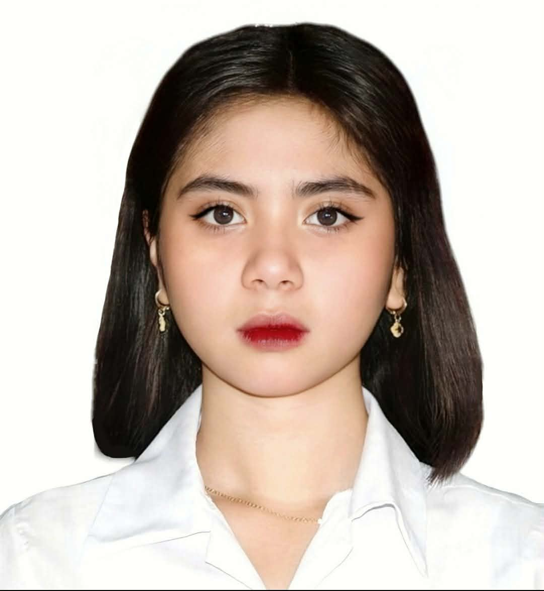

BSIT-1P Weekly Schedule
| Day Semester: 2nd Sem | Subject Code & Description | Time |
|---|---|---|
| Monday | No Classes (Wala) | -- |
| Tuesday | GECPC - Purposive Communication | 6:00 PM - 9:00 PM |
| Wednesday | PATHFIT 2 - Advance Physical Fitness | 10:00 AM - 12:00 PM |
| NSTP 2 - Civic Welfare & Training Services 2 | 4:00 PM - 7:00 PM | |
| Thursday | GECARTA - Art Appreciation | 8:00 AM - 11:00 AM |
| GECSTS - Science, Technology and Society | 6:00 PM - 9:00 PM | |
| Friday | FRI WS 101 - Introduction to Web Technologies | 4:00 PM - 9:00 PM |
| Saturday | GERPH - Readings in Philippine History | 8:00 AM - 11:00 AM |
| CC 103 - Programming 2 | 1:00 PM - 6:00 PM | |
| FIL 2 - Filipino 2 | 6:00 PM - 9:00 PM |
Latest Announcements
Admission is open for new students and transferees. Visit the Registrar's Office for the list of requirements.
The Pateros Technological College Center for Culture and the Arts is calling on all our resident artists! Show us the incredible skill you’re ready to give! Grab your brushes and your favorite "Black Coffee" dahil it’s time to turn that caffeine into a masterpiece.
School Activities & Events
Anniversary celebration with academic, cultural, and sports competitions.
Inter-departmental sports leagues held to foster teamwork among PTCians.
Workshops and tech talks focused on the latest industry trends.
PTC Campus Life
Center for Student Joy and Success (CSJS)
The CSJS is dedicated to the holistic growth of students through counseling, career guidance, and welfare services.
MISSION
To enhance student-artists and student-athletes talents and abilities. Thus, they become well-trained artist and talents who support the institute and the society.
Student Organizations
(Click a logo to visit their Official Facebook Page)

Contact Details
📍 Address: College St., Sto. Rosario-Kanluran, Pateros, Metro Manila
📧 Email: cglura@paterostechnologicalcollege.edu.ph
📞 Phone: +63 09398359368
🌐 Website: www.paterostechnologicalcollege.edu.ph
About Pateros Technological College
About PTC
Pateros Technological College (PTC) is a technical-vocational school established on January 29, 1993 by virtue of Municipal Ordinance No. 93-07. It started its operation on August 16, 1993, initially offering short term and two-year Associate in Computer Science, Computer Secretarial Science, and Computer Technology courses. Systematrix Computer Education and Services, Inc. (SCESI) became the partner group of PTC through Municipal Resolution No. 64 – 95 authorizing the Municipality of Pateros to sign a Memorandum of Agreement with SCESI.
The partnership between PTC and SCESI ended in October, 1995. Keeping up with the goal to continue its technical-vocational advocacy, PTC forged another linkage, this time with the Technological University of the Philippines (TUP). On September 26, 1995, PTC became the recipient of the Adopt-A-School program of TUP through another Memorandum of Agreement. The linkage gave birth to the first four-year Bachelor of Computer Science program in the academic year 1997 – 1998. PTC also became TUP’s ally in the off-campus training of the latter’s undergraduate and graduate students.
Because of the linkage, Pateros Technological College gained its institutional footing to stand on its own. This paved the way to offer ladderized scheme programs that lead to Baccalaureate Degrees. The Bachelor of Science in Education, Major in Information System and Minor in Mathematics was offered in SY 2006 – 2007. Then, the Certificate in Hotel and Restaurant Management leading to Bachelor of Science in Hospitality Management and Bachelor of Science in Office Administration were offered the following school year.
Vision
Pateros Technological College envisions itself as an institution of higher learning which is strongly committed to the holistic development of the students to improve their lives in particular and the society in general.
MISSION
Pateros Technological College commits itself to:
- Provide quality higher education thru specialized professional instruction;
- Provide training in scientific, technological, industrial and vocational fields;
- Enhance moral and spiritual values;
- Instill the love of country and appreciation of the Filipino cultural heritage;
- Promote environmental awareness and unconditional love for mother earth;
- Offer educational opportunities especially to marginalized individuals;
- Heighten students' creativity and leadership through extra and co-curricular activities; and
- Produce quality graduates adept with technological skills and professional education.

Core Values
- Responsibility
- Creativity
- Integrity
- Commitment
- Compassion
- Excellence
- Environment Concern
Himno ng Pateros
Bayan ng Pateros, ayon sa kasaysayan
Lahing magiting, kanyang pinagmulan
May Sakahang lupa, may ilog na daluyan
Kinagisnang gawain ay pag-iitikan
KORO
Pateros, Pateros maunlad ang Bayan ko
Sa ekonomiya at yamang pantao
Nakikiisa ako sa mithii at prinsipyo
Pateros, Pateros isusulong
Aking lakas, sipag, talino at tiyaga
Puhunan ng lahat para sa paggawa
May dangal na taglay sa puso’t diwa
Mamamayan nya’y huwaran ng madla
KORO 2X
Pateros, Pateros maunlad ang Bayan ko
Sa ekonomiya at yamang pantao
Nakikiisa ako sa mithi at prinsipyo
Pateros, Pateros isusulong
Pateros, Pateros isusulong tagumpay mo
PTC Hymn
Paaralan naming mahal
Ikaw ang aming patnubay
Tungo sa kinabukasan
Taglay ang karunungan
KORO
PTC ikaw ang ilaw
Salamat sa iyong aral
Pagmamahal sa iyo ay taglay
Sa alaala lagi ay buhay
II
PTC ikaw ang gabay
Simbolo ka ng tagumpay
Kabataan ito ang alay
Ligaya'y magulang ang kaakbay
(ulitin ang KORO)
About the Project
Project Title: Student Information Website
Purpose: To create an organized, easy-to-use offline portal using HTML and CSS for BSIT-1P students.
Developers

Welcome, BSIT - 1P!
"Debugging the future, one code at a time."
Class Officers
Vision
Pateros Technological College envisions itself as an institution of higher learning which is strongly committed to the holistic development of the students to improve their lives in particular and the society in general.
Core Values
- Responsibility
- Creativity
- Integrity
- Commitment
- Compassion
- Excellence
- Environment Concern
Mission
- Provide quality higher education thru specialized professional instruction;
- Provide training in scientific, technological, and vocational fields;
- Enhance moral and spiritual values;
- Instill the love of country and appreciation of the Filipino cultural heritage;
- Promote environmental awareness and unconditional love for mother earth;
- Offer educational opportunities especially to marginalized individuals;
- Heighten students' creativity and leadership through extra and co-curricular activities; and
- Produce quality graduates adept with technological skills and professional education.
"Ducit Ad Astra" (It leads to the stars)